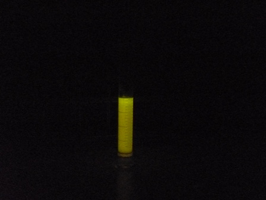
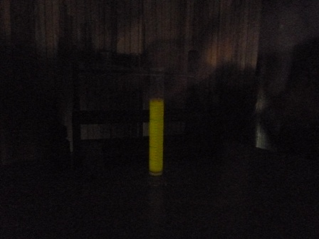

La chemioluminescenza è una caratteristica di pochissime sostanze che in determinate condizioni emettono radiazione nel visibile per un certo tempo.
E' un fenomeno complesso il cui meccanismo esula completamente dalle intenzioni del blog, e pertanto rimando senz'altro gli interessati a letture più teoriche e impegnative di queste modeste note.
Volendo proprio riassumere al massimo, se si considera una reazione tra i reagenti A e B a dare il prodotto C: A + B → C* → C + hυ , succede che per certe sostanze la reazione porta al prodotto C* in uno stato eccitato ed il decadimento degli elettroni su orbite più tranquille (stato fondamentale) non porta alla formazione di calore ma di un fotone (hυ), e di conseguenza di luce.
 A- Sciogliere 1 g di lophine in 20 ml di etanolo tiepido
A- Sciogliere 1 g di lophine in 20 ml di etanolo tiepido
B- sciogliere 1 g di NaOH in 20 ml di acqua ossigenata al 3% e aggiungere 20 ml di etanolo
C- diluire 2 ml di Na ipoclorito al 5% in 10 ml di acqua
Al buio totale, dopo aver abituato gli occhi, mescolare 10 ml della soluzione A e 10 ml della soluzione B e porre la miscela in un cilindro; aggiungere in un colpo mescolando i 10 ml della la soluzione C: risulterà una debole ma visibilissima luminescenza giallastra, che perdurerà per qualche minuto!
L'intensità di luce non è paragonabile a quella del luminol e tantomeno a quella del TCPO (bis-2,4,6-triclofenilossalato, o altri), ma il fascino di queste strane e rare sostanze chemioluminescenti è il medesimo per tutte, e "l'effetto lampadina" non è il più importante!
Le foto della luminescenza sono prese ad alta sensibilità e lunga esposizione (10 e 20 secondi); ho provato anche la ripresa di un video, ma purtroppo la luminosità si è rivelata insufficiente per un filmato accettabile.


Ecco finalmente il cigno promesso... un cigno da chimici naturalmente!
Enjoy with lophine!